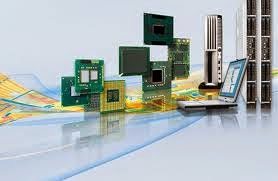
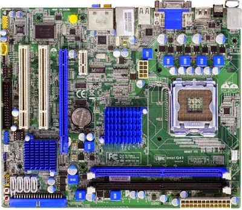

El Bus es la vía a través de la que se van a transmitir y recibir todas las comunicaciones, tanto internas como externas, del sistema informático. El bus es solamente un Dispositivo de Transferencia de Información entre los componentes conectados a él, no almacena información alguna en ningún momento.
bus de direcciones :
Es un canal de comunicaciones constituido por líneas que apuntan a la dirección de memoria que ocupa o va a ocupar la información a tratar. Una vez direccionada la posición, la información, almacenada en la memoria hasta ese momento, pasará a la CPU a través del bus de datos.
bus de datos :
El bus de datos es el medio por el que se transmite la instrucción o dato apuntado por el bus de direcciones. Es usado para realizar el intercambio de instrucciones y datos tanto internamente, entre los diferentes componentes del sistema informático, como externamente, entre el sistema informático y los diferentes subsistemas periféricos que se encuentran en el exterior, una de las características principales de una computadora es el número de bits que puede transferir el bus de datos (16, 32, 64, etc.). Cuanto mayor sea este número, mayor será la cantidad de información que se puede manejar al mismo tiempo.
bus de control :
Es un número variable de líneas a través de las que se controlan las unidades complementarías. El número de líneas de control dependerá directamente de la cantidad que pueda soportar el tipo de CPU utilizada y de su capacidad de direccionamiento de información.
3.1.3 Entrada/Salida
En informática, un periférico de entrada/salida o E/S (en inglés: input/output o I/O) es aquel tipo de dispositivo periférico de un computador capaz de interactuar con los elementos externos a ese sistema de forma bidireccional, es decir, que permite tanto que sea ingresada información desde un sistema externo, como emitir información a partir de ese sistema. Los Dispositivos Periféricos de entrada son todos aquellos dispositivos que permiten introducir datos o información en una computadora para que esta los procese u ordene

Acceso directo a la memoria (DMA):
El acceso directo a memoria (DMA, del inglés direct memory access) permite a cierto tipo de componentes de una computadora acceder a la memoria del sistema para leer o escribir independientemente de la unidad central de procesamiento (CPU) principal. 1Muchos sistemas hardware utilizan DMA, incluyendo controladores de unidades de disco, tarjetas gráficas y tarjetas de sonido. DMA es una característica esencial en todos los ordenadores modernos, ya que permite a dispositivos de diferentes velocidades comunicarse sin someter a la CPU a una carga masiva de interrupciones. Una transferencia DMA consiste principalmente en copiar un bloque de memoria de un dispositivo a otro. En lugar de que la CPU inicie la transferencia, esta se lleva a cabo por el controlador DMA. Un ejemplo típico es mover un bloque de memoria desde una memoria externa a una interna más rápida. Tal operación no ocupa al procesador y, por ende, este puede efectuar otras tareas. Las transferencias DMA son esenciales para aumentar el rendimiento de aplicaciones que requieran muchos recursos. Cabe destacar que aunque no se necesite a la CPU para la transacción de datos, sí se necesita el bus del sistema (tanto bus de datos como bus de direcciones), por lo que existen diferentes estrategias para regular su uso, permitiendo así que no quede totalmente acaparado por el controlador DMA.
Secuendia de eventos detallada
- El procesador inicializa el DMAC programando AR y WC.
- El dispositivo de E/S realiza una petición de DMA al DMAC.
- El DMAC le responde con una señal de aceptación.
- El DMAC activa la línea de petición de DMA al procesador.
- Al final del ciclo del bus en curso, el procesador pone las líneas del bus del sistema en alta impedancia y activa la sesión de DMA.
- El DMAC asume el control del bus.
- El dispositivo de E/S transmite una nueva palabra de datos al registro intermedio de datos del DMAC.
- El DMAC ejecuta un ciclo de escritura en memoria para transferir el contenido del registro intermedio a la posición M[AR].
- El DMAC decrementa WC e incrementa AR.
- El DMAC libera el bus y desactiva la línea de petición de DMA.
- El DMAC compara WC con 0:
- Si WC > 0, se repite desde el paso 2.
- Si WC = 0, el DMAC se detiene y envía una petición de interrupción al procesador.
Circuitos de temporizacion:
El Circuito de temporizador y control: Es una red secuencial que acepta un código que define la operación que se va a ejecutar y luego prosigue a través de una secuencia de estados, generando una correspondiente secuencia de señales de control. Estas señales de control incluyen el control de lectura escritura y señales de dirección de memoria válida en el bus de control del sistema. Otras señales generadas por el controlador se conectan a la unidad aritmética lógica y a los registros internos del procesador para regular el flujo de información en el procesador y a, y desde, los buses de dirección y de datos del sistema. El temporizador es un circuito que se encuentra en la tarjeta matriz (Mother Borrad) de la PC y que es capaz de mantener una cuenta de tiempo basada en el reloj de la computadora. Puede usarse para calcular el intervalo entre dos mediciones de tiempo o para generar pausas. Este chip tiene la capacidad de realizar diferentes funciones de conteo. Es útil para medir el tiempo que dura cierto proceso o para mantener actualizadas la hora del día y la fecha si se deja la PC conectada y encendida (en el caso de computadoras anteriores a la AT, pues esta tiene un reloj de batería integrado; a este respaldo de batería se le conoce como CMOS (complementary MOS).
Controladores de video:
El Circuito de temporizador y control: Es una red secuencial que acepta un código que define la operación que se va a ejecutar y luego prosigue a través de una secuencia de estados, generando una correspondiente secuencia de señales de control. Estas señales de control incluyen el control de lectura escritura y señales de dirección de memoria válida en el bus de control del sistema. Otras señales generadas por el controlador se conectan a la unidad aritmética lógica y a los registros internos del procesador para regular el flujo de información en el procesador y a, y desde, los buses de dirección y de datos del sistema. El temporizador es un circuito que se encuentra en la tarjeta matriz (Mother Borrad) de la PC y que es capaz de mantener una cuenta de tiempo basada en el reloj de la computadora. Puede usarse para calcular el intervalo entre dos mediciones de tiempo o para generar pausas. Este chip tiene la capacidad de realizar diferentes funciones de conteo. Es útil para medir el tiempo que dura cierto proceso o para mantener actualizadas la hora del día y la fecha si se deja la PC conectada y encendida (en el caso de computadoras anteriores a la AT, pues esta tiene un reloj de batería integrado; a este respaldo de batería se le conoce como CMOS (complementary MOS).
3.2 Aplicaciones:
Aplicaciones de chipsetEl chipset de una placa base es un conjunto de chips cuyo número varía según el modelo y que tiene como misión gestionar todos los componentes de la placa base tales como el micro o la memoria; integra en su interior las controladoras encargadas de gestionar los periféricos externos a través de interfaces como USB, IDE, serie o paralelo. El chipset controla el sistema y sus capacidades, es el encargado de realizar todas las transferencias de datos entre los buses, la memoria y el microprocesador, por ello es casi el "alma" del ordenador. Dentro de los modernos chipset se integran además distintos dispositivos como la controladora de vídeo y sonido, que ofrecen una increíble integración que permite construir equipo de reducido tamaño y bajo coste.
Una de las ventajas de disponer de todos los elementos que integra el chipset, agrupados dentro de dos o tres chips, es que se evitan largos períodos de comprobación de compatibilidades y funcionamiento. Como inconveniente nos encontramos con que el chipset no se puede actualizar, pues se encuentra soldado a la placa.
Antes estas funciones eran relativamente fáciles de realizar y el chipset tenía poca influencia en el rendimiento del ordenador, por lo que éste era un elemento poco importante o influyente a la hora de comprar una placa base. Pero los nuevos microprocesadores, junto al amplio espectro de tecnologías existentes en materia de memorias, caché y periféricos que aparecen y desaparecen continuamente, han logrado aumentar la importancia del chipset.
 Chipset y placa base forman un conjunto indisoluble y muy importante. Se debe tener en cuenta que un buen chipset por sí mismo no implica que la placa base en conjunto sea de calidad. La placa base hemos de comprarla mirando y pensando en el futuro, máxime si vamos a realizar posteriormente ampliaciones. El principal impulsor de los chipset en los últimos años ha sido Intel, que además de dominar en los microprocesadores tiene una importante posición en este mercado.
dato curioso:
En el año 1994 Intel presentó el 82434NX (Neptune) y el 82434LX (Mercury), ambos con problemas para trabajar con el bus PCI. En 1995 apareció el conocido chipset FX (Tritón), diseñado específicamente para funcionar con la familia Pentium. El primer chipset serio que comercializó Intel fue el 430FX, al que siguieron otros como el HX, VX o TX, todos ellos para micros Pentium de Socket 7. Con la aparición del Pentium II se empleó el modelo 440FX (Natoma) usado en los Pentium Pro, pero no optimizado para Pentium II al carecer de soporte para SDRAM, Ultra DMA y AGP y tras éste salió el 440LX, que ofrece un buen funcionamiento y gran estabilidad. Con la aparición de micros a 350 y 400 MHz y el bus de 100MHz sale al mercado en 1998 el 440BX, que ofrece soporte para el citado bus de 100 MHz, un mayor ancho de banda para el bus PCI y AGP usando la tecnología Quad Port, soporte para el nuevo bus IEEE 1394 y Pentium II Mobile Processor destinado a equipos portátiles. Paralelamente al 440BX aparece el 440EX, diseñado para ser usado con el procesador Celeron, este chipset es una versión reducida del LX, pues sólo soporta 256 Mb de memoria y un máximo de 3 slots PCI, todo ello orientado a reducir drásticamente los costes y permitir la venta de equipos muy baratos.
3.3 Ambientes de servicio:
El negocio de proveer servicios de datos es mucho más complejo que la forma en la que se dan los tradicionales servicios, que con frecuencia se terminan involucrando o necesitando la colaboración de terceras empresas.
Negocios
Definitivamente, la tecnología en general ha sido la causa principal y la acción más directa para la transformación del trabajo de las organizaciones en la posguerra del siglo XX. Tanto los bienes de capital «duros» (computadores, teléfonos, videos, facsímiles, grabadoras, etc.), como los programas y sistemas de información y comunicación en general, han incrementado enormemente la productividad y eficiencia de las organizaciones. Tenemos como ejemplos los siguientes: bases de datos en redes de todo orden y topología, sistemas de reservaciones en aerolíneas, sistemas de contabilidad y nóminas, archivos clínicos en centros de salud, sistemas de conmutación electrónica y un sin número de otras aplicaciones a procesos administrativos.
Industria
La industrialización de los servicios de tecnología de información va a redefinir el mercado en términos de como las organizaciones evalúan, compran y seleccionan los servicios y como los vendedores desarrollan y establecen precios de los servicios. Para lograr esta estandarización, se requiere un enfoque hacia las soluciones genéricas y esto debe ser responsabilidad de los proveedores, que deben de desarrollar, operar y administrar el resultado de estos genéricos de TI. Aunque los servicios de TI están en proceso de madurez, la madurez de la industria se ha incrementado en aspectos evidentes, como la forma en que los servicios son implementados y administrados.
Comercio electronico
El desarrollo de estas tecnologías y de las telecomunicaciones ha hecho que los intercambios de datos crezcan a niveles extraordinarios, simplificándose cada vez más y creando nuevas formas de comercio, y en este marco se desarrolla el Comercio Electrónico. Se considera “Comercio Electrónico” al conjunto de aquellas transacciones comerciales y financieras realizadas a través del procesamiento y la transmisión de información, incluyendo texto, sonido e imagen.